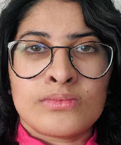

Project Overview
This project explores how we can morph faces together, compute average faces, and create caricatures through the use of Delauney triangularization, matrix transformations, barycentric coordinates, and interpolation.
Defining Correspondences
Let's try to morph Barack Obama's face to Steph Curry's face!
| Barack Obama | Steph Curry |
|---|---|
The first thing we need to do to morph any two images together is to manually define their correspondence points, so that we can map and group their features together.
To do this, I used this tool to manually define correspondence points for major features on each of their faces. I plotted 99 points for each image.
Afterwards, I computed the Delauney triangularization of each set of correspondence points.
Computing the "Mid-Way Face"
Now, we can begin to compute the "mid-way" face, otherwise known as the average face, between Barack Obama and Steph Curry.
First, we take a weighted average of image1's (Obama) correspondence points and image2's (Curry) correspondence points with the following formula:
(1 - warp_frac) * image1_corresp_pts + warp_frac * image2_corresp_pts
Where warp_frac is set to 0.5 to calculate the correspondence points of the mid-way face.
Next, we compute the Delauney triangularization of the mid-way face's (aka avgImage) correspondence points.
From there, we warp Curry and Obama's faces to the mid-way face using the Delauney triangularization of the averaged correspondence points.
For each image (either Obama or Curry's), we retrieve the triangles from the Delauney triangularization of the mid-way face, find the matching triangle(s) in the source image's triangularization, and map + linearly interpolate pixels from inside each triangle in the mid-way face to the corresponding pixel in the triangle of source image.
| Obama warped to the average face | Curry warped to the average face |
|---|---|
Once we have warped each face to the average face, we cross-dissolve both images together. We use the following equation below to generate the final mid-way image:
(1 - cd_val) * image1 + cd_val * image2
Where cd_val, the cross-dissolve value, is set to 0.5 to equally blend both images together linearly.
Below is our final mid-way face:
| Currybama |
|---|
The Morph Sequence
With the algorithm we described in Part 2, we can change warp_frac and cd_cal from [0, 1] to generate a morph sequence between Barack Obama and Steph Curry.
As a bonus feature, I also implemented a morph sequence where linearly space values from [0, 1] are mapped to a sigma function to generate a non-linear, smoother morph sequence.
| Linear Morph Sequence (45 frames) | Non-linear Morph Sequence (60 frames) |
|---|---|

|

|
Morphing my face to Obama's:
| My face | Obama's face |
|---|---|
| Displaying correspondence points + triangularization: |
|---|
| Mid-way face: |
|---|
| Linear Morph Sequence (45 frames) | Non-linear Morph Sequence (60 frames) |
|---|---|

|

|
The "Mean Face" of a Population
Using the spatially normalized faces and corresponding facial key points (aka correspondence points) from the FEI Face database, we can compute the average face of the dataset.
The dataset contains two types of facial expressions: neutral and smiling. Below are results from the dataset:
| A neutral face | A smiling face |
|---|---|
| Average neutral face | Average smiling face |
| My face warped to the average neutral face: | The average neutral face warped to me |
|  |

|
Caricatures: Extrapolating from the Mean
Using the average faces calculated in Part 4, we can generate caricatures by extrapolating correspondence points from the mean face.
To generate the correspondence points for the caricature, we take the weighted average between the correspondence points with the following formula:
alpha * (avg_pts) + (1 - alpha) * (image_pts)
Where alpha is used to extrapolate from either the average face or the source image's correspondence points. A positive alpha value will move the correspondence points closer to the average face, while a negative alpha value will move the correspondence points closer to my face.
Below are some results:
| My face: | Caricature (alpha = -0.6): |
|---|---|

|
|
| Obama's face: | Caricature: |
Bells & Whistles
Creating a PCA Basis for a Face Space
Using the FEI database once again, we can construct a PCA basis for the dataset's face space, and use it to try to reconstruct images from outside the set. This can be done by adding the mean (average) face computed by PCA to a linear combination of the eigenfaces computed by PCA.
For this project, I used the first 170 images from the dataset (both neutral and smiling faces) to construct my PCA basis, leaving 30 images aside to use as a test set.
Pictured below are the top 16 eigenfaces (sorted by decreasing explain variance values) from the PCA basis:
| Top 16 Eigenfaces | PCA Mean Face |
|---|---|
We can observe the scree plot of the observed variance ratios of the eigenfaces to determine how many eigenfaces we need to reconstruct the test set with a certain level of accuracy.
| Scree plot of the observed variance ratios |
|---|

|
From the scree plot, we can see that the first 100 eigenfaces can be used to represent over 90% of the images in the dataset.
To demonstrate this, I attempted to reconstruct images from within the training set using the top 15, 50, 75, and 170 eigenfaces.
As we can see, images from the training set can be perfectly reconstructed using all eigenfaces. However, using the top 75 eigenfaces offers us a reconstruction that contains most of the original images' features.
We can use our PCA basis to try and reconstruct images from outside the training set. Below are attempts to reconstruct images from the test set using the eigenfaces from our PCA basis:
Below are 16 images from the test set, and reconstructed versions of them using all 170 eigenfaces:
| First 16 images from the test set | Reconstruction of the 16 test set images |
|---|---|
Here, we try to reconstruct images from outside both the training and test set using all 170 eigenfaces:
(spooky) 🎃 Bonus!
If you're not careful about matching the same corresponding triangles across images, you can get some pretty gnarly morphs! Below are some October-themed morphs I rendered after not properly matching corresponding points across these images and the average neutral face from part 4:
| Obama...? | Curry...? | Me...? |
|---|---|---|
| How many eyes even are there? |